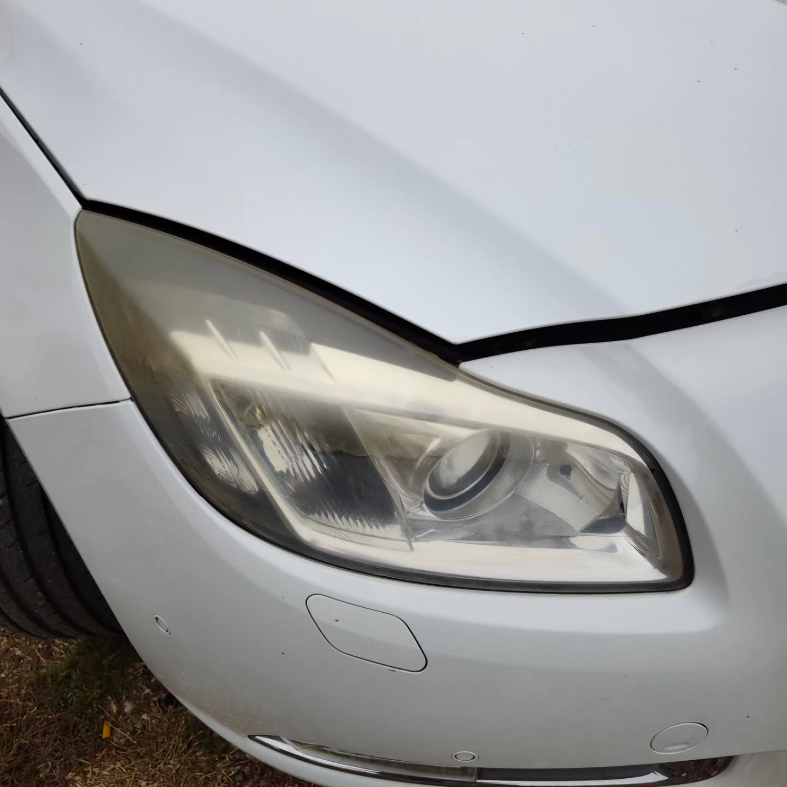
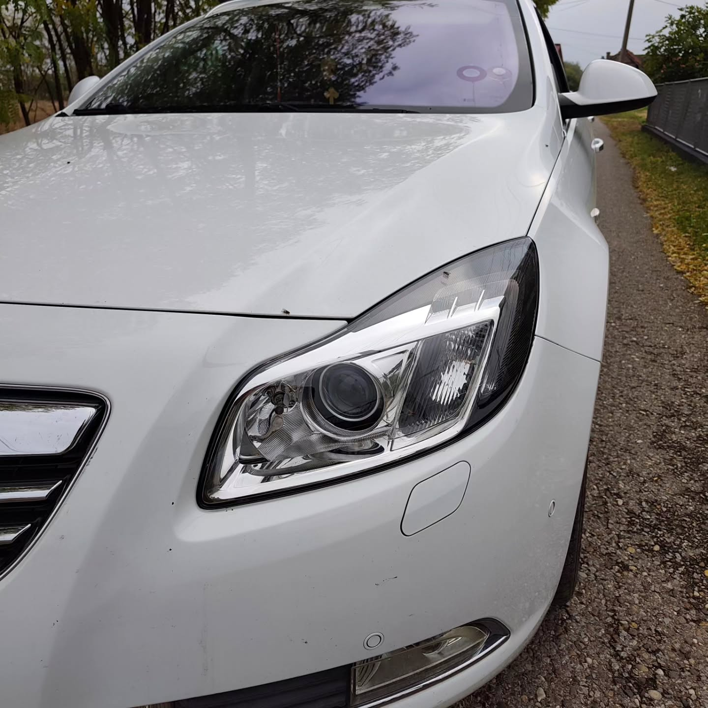
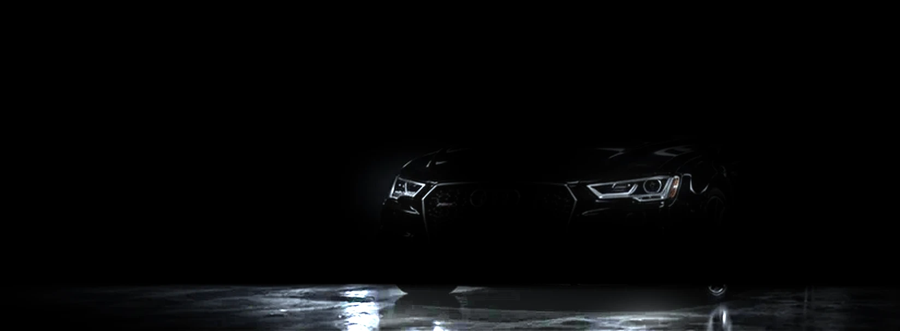
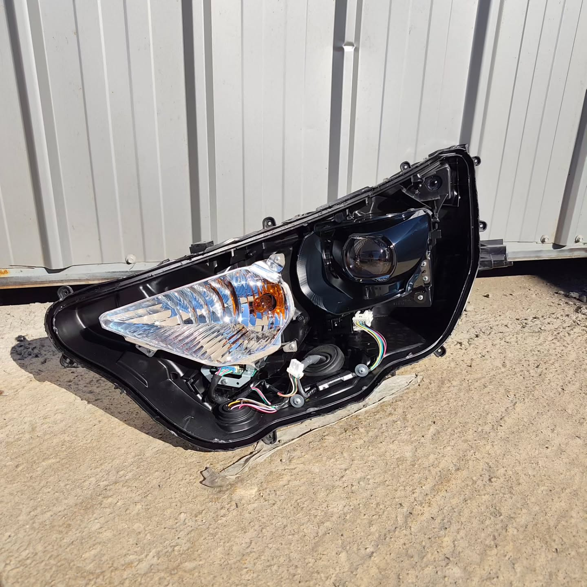
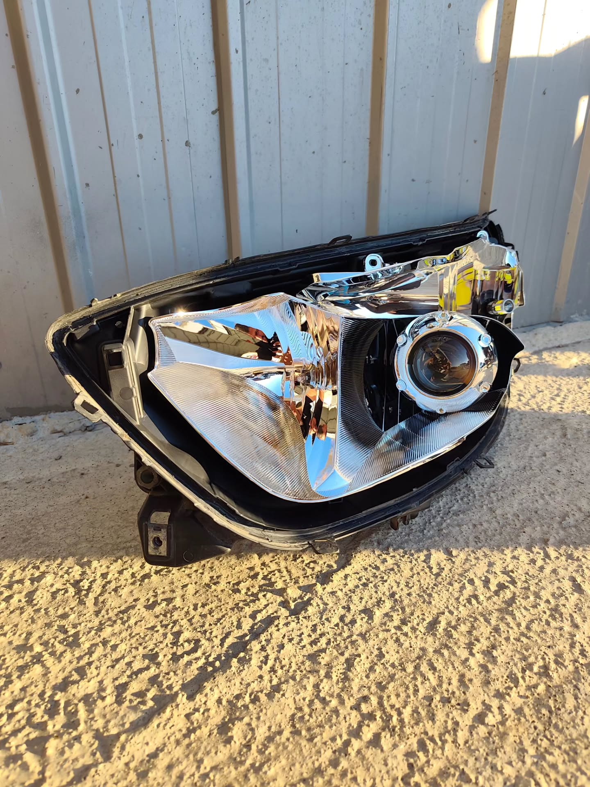
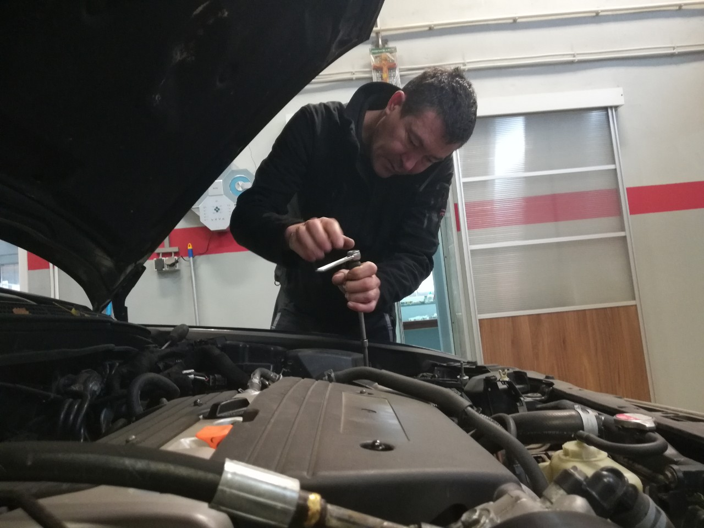

01
Opel Insignia
Zamenjene obe plastike fara, xenon prebačen na LED, polirane rozetne i lupe projektora.


Usluge
Cenu dajemo posle pregleda ili kad pošalješ slike. Pozovi i dogovorimo.
Požutelo i mutno staklo opet postaje providno.
Kad poliranje ne pomaže, odlepimo staklo i stavimo novo.
Varimo oštećena kućišta i popravljamo ono što pukne.
Sklanjamo vodu i kondenzaciju iz fara i zatvaramo ga da ne vrati.
Lupa projektora i hrom rozetne dobijaju sjaj iznutra.
Prebacujemo farove na jače i belje LED svetlo. Ugrađujemo i bi-LED projektore.
Menjamo LED ploče, diode i module migavca. Popravljamo glavnu ploču fara.
Dnevna svetla, cotton prstenovi, crne rozetne.
Zašto Semtex
Vlaga, požutelo staklo i pregoreli moduli nastaju iznutra. Zato far otvaramo, čistimo i sklapamo nazad.


Recenzije
Zamenio oba stakla koja su bila puna vode i požutela, odradio poliranje sočiva i popravio lošu žicu bez ikakve dodatne naknade. Jako pedantan majstor, vratio farove u fabričko stanje uz realnu cenu, ocena 11/10!
Jako dobar majstor. Na BMW E60 nisu mogli 3 majstora da odlepe staklo, ovde za 2 minuta. Farovi kao novi. Sve pohvale
Pošteno odrađen posao, sve po dogovoru, transparentno a pri tome i povoljno. Otvoren za savetovanje i preporuku.

Majstor
Milan radi svaki far sam. Mušterije dolaze iz Novog Sada, Beograda, Subotice, Sombora, Kikinde, Zrenjanina, Inđije i Kule.
Ako ne znaš da li ti treba poliranje ili novo staklo, pošalji sliku. Reći će ti šta treba i šta ne treba da radiš.
Kontakt